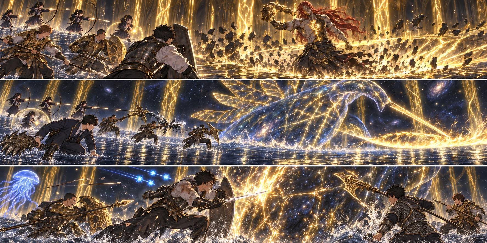

DAY97 / TURN1−108
まだ、全員の名前を呼んでいない。

「戦いは、終わった。でも、まだ全員の名前を呼んでいない」
【DAY97・正午前／エレの教会】翼は二枚の紙に同じ時刻を書いた。翌朝、六時。片方を航へ渡し、もう片方を折って胸へしまう。先生からの連絡がなくても、主力が戻らなければ新しい祝福を開く。「帰ってきたら、使わなかったって文句を言いますから」。私は頷いた。「その文句は、喜んで聞く」
出発の前に、三十三人を見た。鎧を直す者、矢を揃える者、桶を抱えたまま立ち止まった者。初めの日には、何を持てばよいかすら分からなかった手だった。私はいつもの出席簿を持っていない。それでも、もう誰の名前も見ずに呼べる。
「帰ったら出席を取る。最後まで、全員分だ」。誰かが、ここでも取るんですか、と言った。少し笑えた。その短い時間を置いて、十三人は祝福の光へ入った。
【十二時十分／エルデの王座】灰が、靴の縁に白く積もった。ゴッドフレイと戦った場所を横切る。相手の拳が砕いた石はまだそこにあるのに、今日は、その先から差す光の方が怖かった。樹の裂け目を見上げると、道の終わりが扉の形をしていた。
蓮が最後の確認をした。「先生が前を見る。俺が後ろを見る。陽太、健太、交代の声を先に。直人と大地と陸は、当たる時だけ入る。弓と術は、先生の背中を射線に入れない」。紬は触媒を持ち上げた。「守れるのは近くの六人。離れたら、かかっていると思わないで」
私はクララをまだ呼ばなかった。後半に残す。赤瓶は四つ、回復量を増した一本一本が、腰に重かった。大ルーンの力は身体の底を支えている。借りた力だと分かるからこそ、無駄に使いたくなかった。
【黄金樹の内側】最初に見えたのは、吊られた人の形だった。崩れる輪郭。金色の裂け目。床に落ちたものが立ち上がり、赤い髪が揺れた。ラダゴン。砕けた身体の内側には、骨や血とは違う光が通っていた。
彼は名乗らなかった。こちらが十三人いることにも、子供が混じることにも、言葉を返さない。モーゴットの怒りも、ゴッドフレイが認めてくれた戦士の顔もなかった。握り直した槌が、返答だった。
大地の誓いが短く灯り、紬の防護が前衛の輪郭をなぞった。葵の祈りは、傷が生まれる前から薄く身体を満たしていた。私は踏み込み、剣を当て、すぐに槌の落ちる場所を捨てた。盾で受けるためではなく、逃げる幅を失わないために前へ出る。
光の槍が飛んだ。刺さった床へ近づこうとする足を止める。遅れて爆ぜた光が、さっきまで私の膝があった空間を洗った。その向こうで健太が槍を伸ばし、直人の大竜爪が、傷ついた神の肩へ叩きつけられた。
【判定：五・三＋四＝十二】初動は通った。人数で囲むのではなく、前を向かせる者と、横から触れる者を入れ替える。大地の黄金の刃は、光だけで敵を溶かしはしなかった。それでも重い金属の刃は届く。強くなった剣と槍も、確かに手応えを返した。
ラダゴンが消えた。花が弓を下ろし、千夏も同時に弦を緩めた。次の瞬間、健太の横へ金色が落ちる。「右、空けろ！」。蓮の声に合わせ、陽太が健太の肩を引いた。爆発は盾一枚を越える。そこに立ち続けてはいけない。
【判定：四・六＋四＝十四】二人が退いた隙間へ、私が入る。悠は光った手に向けて撃たず、槌が空を切り、陸の大剣が届いたあとに三つの流星を放った。拓海の一発は逆側から。どちらも、私が動く先には置かない。
三度、槌が上がった。床に広がる金色の筋を見た瞬間、学院の鉄球や城壁の階段が、妙な鮮明さで蘇った。危険は目の前の敵だけではない。足を置く場所だ。
「まだ立つな、もう一つ！」。二度目を越えたところで、蓮が叫んだ。紬の張り直した光の中を抜け、私は最後の波へ踏み込んだ。背後で槍の穂先が並ぶ。陸は欲張らず一撃で離れ、大地が、その一撃分の隙間へ長柄を差し込む。
【判定：一・四＋五＝十】崩れたのは、こちらの隊列ではなかった。ラダゴンの膝が折れ、槌が低く落ちた。十三人の誰も、勝ったとは言わなかった。私は腰の瓶を確かめた。まだ、一本も飲んでいない。
黒いものが、床から現れた。倒れた身体が覆われ、引かれ、剣の形へ変わっていく。周囲の床が、水面になった。天井が失われる。どこまでも遠い金色の幹が、星の中へ立っていた。
【後半／エルデの獣】綺麗だ、と一瞬思った。思ってから、その言葉が恐ろしかった。夜を透かす巨大な身体。その中を枝のように走る光。人が祈る時に見上げるものが、こちらへ剣を向けていた。
葵が青瓶を一本飲み、後半の恵みを重ねた。紬も青瓶を使って、防護を更新する。私はクララを呼んだ。淡い青が水面から浮かぶ。ここで毒は頼れない。生きた敵とは違う。わずかでも、こちらと別の方を向かせてほしかった。
「背後へ。陽太、今なら——」
その「今」が、違っていた。金色の炎が、水を舐めるように広がった。獣は思っていた場所に留まらず、ゆっくりに見えた身体が一息で遠ざかる。陽太が槍を回して起こした黒炎の渦は、身体へ届く前に引き裂かれた。技を使った感覚だけが、腕に残った。
直人が膝を落とした。大竜爪の重みが、水面へ叩きつけられる。自分で立とうとして、片足が滑る。私は振り返りかけ、その奥で剣を持ち上げる獣を見た。近づけば助けられるという距離ではなかった。
【開幕：一・一＋四＝六。凶運の再確認：六・二＝八】最悪の重なりだけは、来なかった。私は獣の側へ走り、剣を見せた。直人を起こす手を自分のものにしようとせず、敵の視線を引く。蓮が陽太を直人へ回し、健太がその外へ盾を向けた。
「足、まだ動く。引いてくれ」。直人が言った。誰かに聞こえる声だった。赤瓶を飲み、葵が二本目の青瓶を空にする。黄金樹の回復が、二人の立つ水面へ広がった。彼女は先生のいる遠くを一緒に治そうとはしなかった。今、届く場所の人を立たせる。
直人は大竜爪を杖にして起きた。「行ける。次は、追いすぎない」。陽太が頷いた。黒炎の渦はもう使えない。それでも彼の手には、強化した槍が残っていた。
【光輪：二・六＋三＝十一】空に輪が生まれた。足元にも、逃げ道を囲む線が走る。「全員、同じ場所へ寄るな！」。蓮が左右を指した。花は獣から目を離し、千夏の足を見た。跳ぶ位置を合わせ、輪の外へ出る。狙うより先に、生きて矢を持っていく。
追ってくる光は、一度避けても終わらなかった。星の粒が曲がり、また近づく。走る。方向を変える。味方の列へ引き込まない。花は何本か分の射撃の機会を捨てた。その判断の向こうで、クララの青い傘がまだ揺れていた。
紬は二本目の青瓶を使い、最後の防護を張った。「次から、ずっとは守れない。私の声を聞いて！」。葵の青瓶も空だった。二人が手を振れば、何度でも助かるわけではない。その声を聞いてから、前衛の動きはむしろ揃った。
【接近：五・二＋四＝十一】獣が剣を振り切った。私が刃の内側へ入り、健太と陽太が反対から槍を通す。大地の長柄が斜めに落ち、陸の大剣が重なる。砕けた金色の筋は増えた。それでも、まだ倒れない。
ここまで、獣への攻勢は四点。突破に必要な五点へ届いていなかった。開幕で失った一度の接近が、最後まで私たちを追ってきた。遠ざかられれば、空の青瓶を握ったまま、もう一度あの星を越えることになる。
私は距離を取らなかった。「蓮、あとを頼む」。短く言ったあとで、少し違うと思った。これは別れの言葉ではない。戦う手を、自分一人に集めないための言葉だ。
盾を外へ向け、剣を握り直した。獣の腹に走る光が、目の高さを過ぎていく。私が追っているのか、身体の方が流れているのか、分からなくなる。大ルーンに支えられた脚を、もう一度だけ前へ出した。
【追加突破：三・六＋四＝十三】私の剣が届く。背後で、蓮が止めていた射撃を解いた。「今、右から！」。花と千夏の矢が、私の肩を越えない線から刺さる。悠と拓海は青瓶で戻した最後の術を撃ち、近接の三人が私の脇を埋めた。
【先生の露出：五・六＝十一】剣風が鎧を打った。胸が潰れるような息苦しさで視界が狭まり、私は膝をついた。それでも、感覚は途切れなかった。地面——水面に、手がついた。自分の赤瓶へ手が届いた。強くしておいた一口が、息を戻した。
もう一度立った時、獣は剣を振らなかった。金色の枝が、一本ずつ暗くなっていた。星を透かす大きな身体が、輪郭を失う。そこにいたものの大きさだけが、水の上に残っていた。
誰かの息を吸う音がした。次に、槍の石突が床を叩く音。床が、戻っていた。私たちは、壊れかけたマリカの前に立っていた。
「……終わった？」。花が言った。私は、すぐには答えられなかった。攻略サイト先読みの残る手順を読み、目の前の像を見た。敵を倒した。その次に、この世界をどう終えるか選ぶ操作がある。帰還の契約は、まだ成立していない。
「戦いは、終わった」。それを口にすると、やっと手が震え始めた。「でも、まだ全員の名前を呼んでいない」
新しい祝福を解放した。十三人が実際に触れ、帰り道を記録する。蘇生される者はいなかった。零人。それがどれほどありがたい数字なのか、颯の顔を思い出して、ようやく分かった。瓶と術を休息で戻す。鎧の焦げや刃の摩耗は、そのままだった。
マリカには、まだ触れなかった。メリナのことを勝手に叶ったことにも、諦めたことにもしない。まず教会へ戻り、ここまで私たちを届かせた二十人と、同じ場所で話す。
【同じ午後／リムグレイブ】翼たち六人は、地下墓へ向かう道で足を止めていた。以前とは違う位置に、巡回の影が見える。勝負を仕掛ければ早いかもしれない。しかし、ここで減らすための六人ではない。航が遠回りを指した。
【C隊配置：一・四＋四＝九】迂回で時刻は押したが、日没前に入口へ着いた。祝福には触れない。翌朝六時。先生が戻らなかった時に、自分たちが触れる光だ。凛は荷物の置き場を決め、真央は復活した人に渡す水の口を確かめた。
教会では、亮たちの近場狩猟が三十六食分を増やしていた。【六・三＋四＝十三】外へ出ない者も、水を煮て、道具を洗い、戻る人数分の場所を空けた。朝に分けた今日の食事は、もう帳面から引いてある。夜だからと、もう一度引くことはしなかった。
【十六時三十分／エレの教会】帰還した十三人を見て、結衣が最初に尋ねた。「誰が、まだですか」。蓮が答えた。「いない。十三人、全員ここにいる」。結衣はそれでも、自分の目で一人ずつ確かめた。
救援の六人へ、二人が知らせに走った。遠くへ声が届くわけではない。既知の道を歩き、顔を見て伝える。翼は戻ってきた伝令の顔を見てから、ようやく胸の紙を出した。「……使わなかったじゃないですか」。私に言うはずの文句を、一足先に言ってしまった。
【十八時三十分】六人が戻り、三十三人になった。紬は椅子へ座ってから、自分の手がまだ触媒を握っていると気づいた。直人は濡れて重くなった上着を脱ぎ、陽太の隣へ干した。最後に届かなかった黒炎の話を、二人はもう少しだけ、笑わずにしていた。
私はその場で、名前を呼んだ。返事は大きかったり、小さかったり、少し遅れたりした。葵のところで声が詰まりそうになったが、最後まで呼んだ。全員が生きている。先生も、生徒も。
机に、エルデの追憶を置いた。五万ルーンの戦果を加えた財布は、五万三千九百四十八。矢は五百四本。けれど、今はその数字より、さっきの三十三という数を覚えていたかった。
百日目までは、まだ時間がある。世界を終えるために出発した私たちは、世界を終える前に、一度だけ全員のところへ帰ってきた。
今回の判定記録
| 判定 | 出目 | 補正 | 合計 |
|---|
| ラダゴン・金槌と光の槍 | 5+3 | 4 | 12 |
| ラダゴン・転移爆発と前衛交代 | 4+6 | 4 | 14 |
| ラダゴン・三連の黄金波を越える | 1+4 | 5 | 10 |
| エルデの獣・炎の背後と黒炎の渦 | 1+1 | 4 | 6 |
| 凶運の再確認 | 6+2 | 0 | 8 |
| エルデの獣・光輪と追尾星の分散 | 2+6 | 3 | 11 |
| エルデの獣・最後の接近と集中攻撃 | 5+2 | 4 | 11 |
| 先生の追加突破 | 3+6 | 4 | 13 |
| 先生の露出・独立死亡リスク | 5+6 | 0 | 11 |
| C隊・地下墓入口への救援配置 | 1+4 | 4 | 9 |
| 教会班・既知近場の狩猟と護衛 | 6+3 | 4 | 13 |
抽選前の条件 · 抽選結果